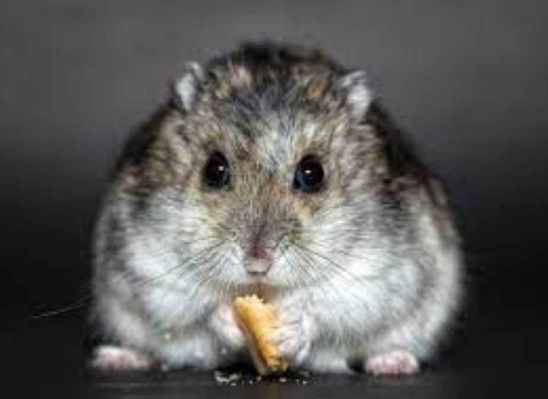
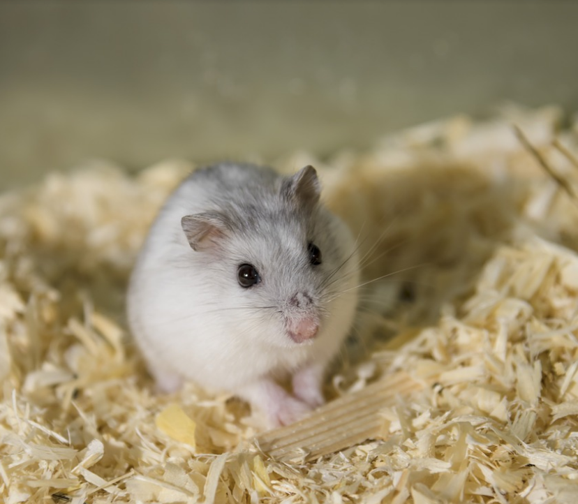
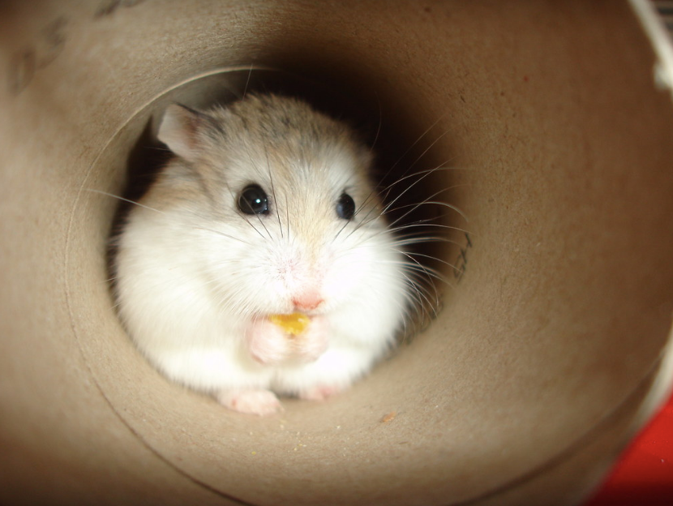
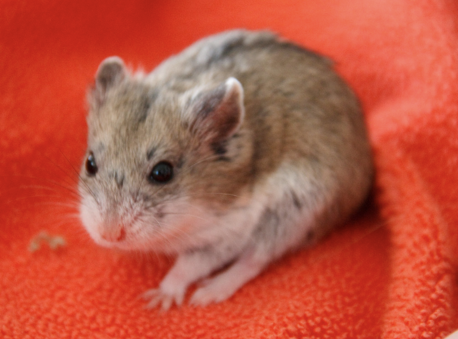
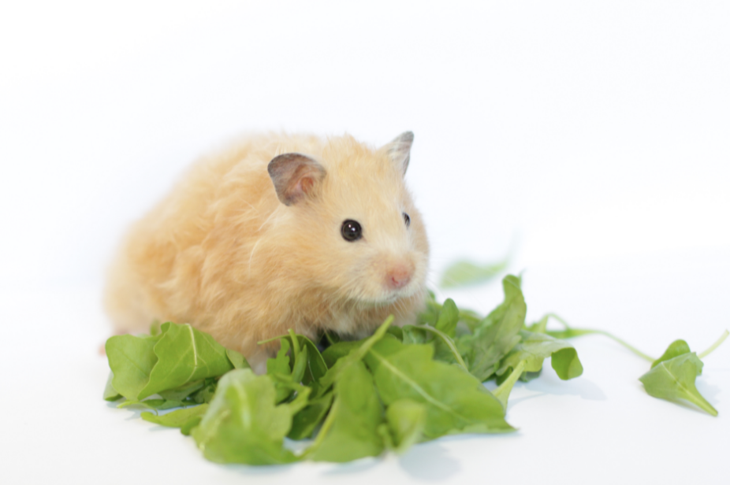
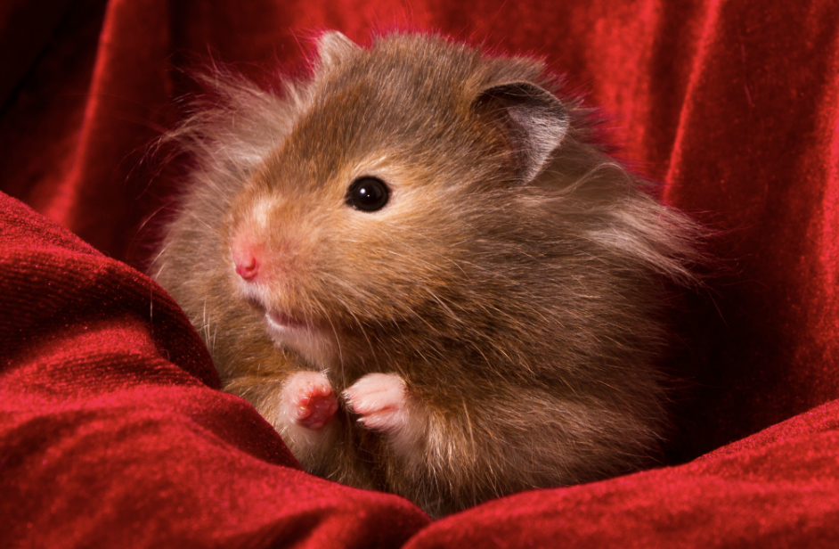
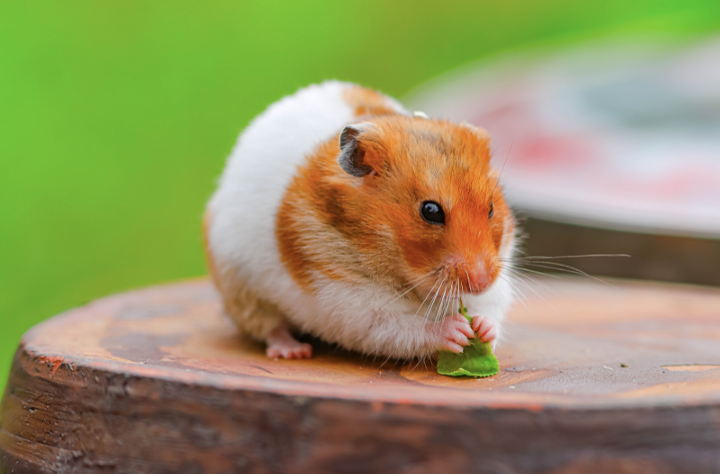
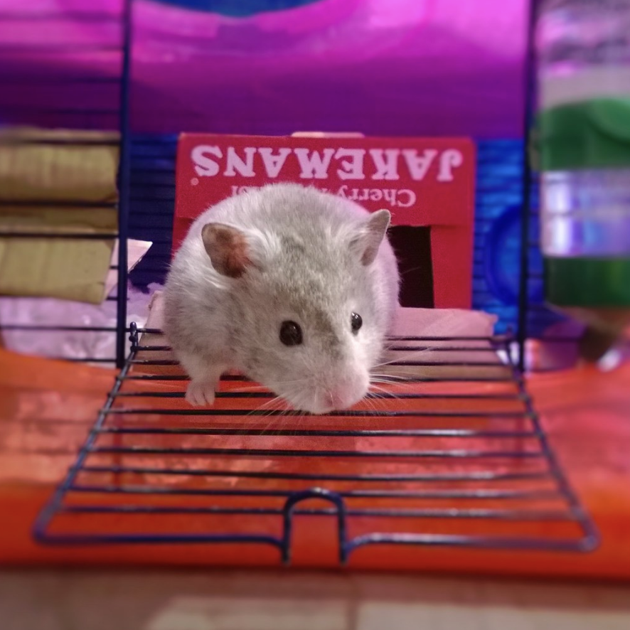
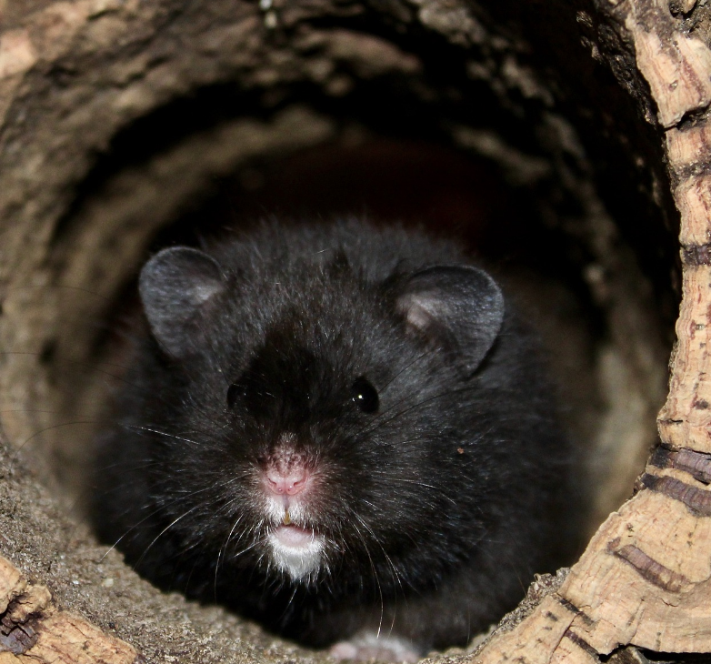

There are 4 dwarf hamsters: the Russian Campbell's dwarf, the White White hamster, the Roborovski hamster, and the Chinese Dwarf Hamster. In general, the dwarf hamsters breeds are small (between 1 to 4 inches). The Russian Campbell’s Dwarf is small and brown. These hamsters are prone to diabetes and aggression. The Winter White hamster is named such because their coat of fun changes colors as the seasons change, to be more white in the winter. The Roborovski hamster, also known as the Robo hamster, is the smallest hamster breed at 1 inch when fully grown. However, these hamsters also tend to be the most energetic. To properly care for a Robo hamster, you will need to provide them with a large area of sand in their enclosure as they are desert creatures. The last dwarf breed is the Chinese hamster. They are the most mouse like hamster breed, with a slightly longer tail than the rest!
   Syrian Hamsters
The last domesticated hamster breed is arguably the most popular hamster to have a a pet as well as the largest breed, the Syrian hamster. The Syrian hamster breed has been domesticated for the longest, which makes them typically easier to hand tame than the dwarf breeds. These hamsters can be up to 8 inches long on average, making them nearly twice the size of the dwarf breeds. Unlike dwarfs, they are not inclined to diabetes. Syrian hamsters also have the most coat variety of the hamster breeds. Their coloration varies from white, to beige, to orange, to brown, to black, and many shades in between. They can also come in a variety of patterns including solid, banded, dominant spot, tortoiseshell, long and short hair, and rex (curled). Though they are the only domesticated non-dwarf breed, there still is a lot of variety of options for Syrian hamsters as well.
    